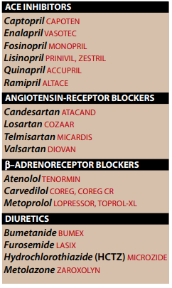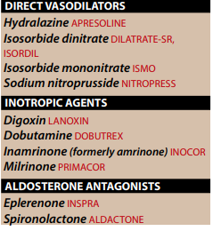
I.OVERVIEW
→ [HF] — Heart Failure
- complex,progressive disorder
- heart is unable to pump sufficient blood to meet the needs of the body
- sypmtoms : dyspnea , fatigue , fuild retention
- impaired ability of the heart to fill with and/or pump the blood
- abnormal increases in blood volume interstetial fluid ("congestive")
- because inlude — dyspnea from pulmonary congestion in left HF and peripheral edema in right HF
- arteriosclerotic heart disease
- myocardial infranction
- hypertensive heart disease
- valvular heart disease
- dilated cardiomyopathy
- coronary artery disease
I.A.Role of physiologic compensatory mechanim in the progression of HF
→ Chronic activation of
- sympathetic nervous system and
- renin-angiotensin-aldosterone system
- associated with
- remodeling of cardiac tissue
- loss of myocytes
- hypertrophy
- fibrosis
- less eliptical
- more spherical → [which interfering with the ability as a pump]
I.B.Goals of pharmacologic intervention in HF
→ alleviate symptoms
→ slow disease progression
→ improve survival
→ 6 classes of drugs have been shown to be effective
- β-andrenoreceptor blockers
- diuretics
- direct vasodilators
- inotropic agents
- aldosterone antagonist
- depending on the severity and individual patients factors.
- one or more classes of the drug are admin.
- reduction of the load on the mycoardium
- decreased extracellular fluid volume
- improved cardiac contractility
- slowing the rate of the cardiac remodeling
II.PHYSIOLOGY OF THE MUSCLE CONTRACTION
→ Myocardium , like smooth/skeletal muscle respond to stimulation by depolarization of the membrane
- followed by shortening of the cotractile proteins → relaxation and return to the resting state
- whenever a single cell stimualted
II.A.Action Potential
→ are electrically excitable
→ intrinsic rythm generated by specialed cells
- called "pacemakers"
- located in the sinoartial and antriventricular(AV) nodes.
- ions pass through channels [to induce depolarization/repolarization] in the sarcolemmal membrane → "create a current"
- whereas others are sensitive to adonesine triphosphate or to membrane voltage.
II.B.Cardiac Contranction
→ direclty related to the concentration of free (UNBOUND) cytostolic calcium.
→ agents that increase these calcium levels
- increase the force of the contraction (inotropic effect)
- directly/indirectly alerting the mechanism of control of intracellular calcium
II.B.1 Sources of free intracellular calcium
→ outside the cell
→ also enter by exchange with sodium
→ also released from sarcoplasmataic recticulum and mitochondria
- which further increases the cytostolic lever of calcium.
II.B.2 Removal of free cytostolic calcium.
→ free cytostolic calcium were to to remain high
- we would have a constant contracntion of the heart muscle
II.B2.a.Sodium/Calcium exchange:
→ sodium/calcium echange reaction that revesible exchanges calcium ions for sodium ions.
- which can affect cellular levels of calcium
II.B2.b.Upatke of calcium by the sarcoplasmatic recticulum and mitochondria.
→ recaptured by the sarcoplasmatmic recticulum and mitochondria.
→ more than 99% of the intracellular calcium is located in these organlles.
- and even a modest shift between em can lead to :
- a large change in the concentration of free cytostolic calcium
II.C.Compensatory physiological responses in HF
→ compnsatory mechanims enhance cardiac output
- although initially benificial → further deterioration of cardiac funciton
II.C.1. Increased sympathetic activity
→ decrease in blood pressure — >activate sympathetic nervous system
- sustain tissue perfusion → stilmulation of β-andrenergic receptors
- → increased heart rate → greater force of contraction of the heart muscsle
→ the work of the heart , in the long term , contribute to further delcine in cardiac function.
II.C.2. Activation of the renin-angiotensin system
→ decrease in blood flow to the kidney → prompting of release of renin
- → increase formataion of angiotensin II and release aldosterone.
- increased peripheral resistance and retention of sodium and water
- if heart is unable to pump this extra volume → venous pressure increases
- peripheral edema + pulmonary edema occurs
II.C.3.Myocardial hypertrophy
→ heart in size increased
- chamber dilate
- more globular
excessive enolgation of the fibers results in weaker contranction.
→ geometry dismish the ablility to eject blood
→ "systolic failure" → ventricle unable to pump effectively
→ "diastolic dysfunction" → impaired by structual change such as hypertrophy
- thickening of the ventricular wall
- subsequent decrease in ventricular volume decrease
- ability of heart muscle to relax
- indaquacy of cardiac output is term "diastolic HF -->[ common feature on elderly woman]
- pure form characterized by signs and symptoms of HF
- presence of normal function of the left ventricle
II.C.3.Decompensated HF
→ adaptive mechanism adequately
- restore cardiac output
- HF said to be "compensated"
→ if adaptive mechanims faial to maintain cardiac output
- HF is decompensated
II.C.4.Therapeutic strategies in HF
→ reduction in physical activity
→ low dietary intake of sodium (<1500mg/day)
→ treatment of cmorbid condition
→ judicious use of diuretics
→ inhibitors of the renin-angiotensin system
→ DRUGS may perticipate / exacerbate HF such as:
- NSADs
- alcochol
- caclium-channel blcokers
- high dose β-blcokers
- antiarrythmics → should be avoided if possible
- dyspnea
- exertion
- orthopnea
- paroxysmal nacturnal dyspnea
- fatigue
- dependnt edema
III.INHIBITORS OF THE RENIN-ANGIOTENSIN SYSTEM
→ HF leads to activation of the renin-angiotensin system via two mechanism
- ↑ renin release into the afferent arterioles
- in response to the dishmished renal perfusion pressure produced by the failing heart.
- that causes salts and water retention → ↑ preload/afterload that are characteristic that the heart is failing
- favoring remodeling / fibrosis / inflammatory changes
III.A - Angiotensin - converting enzyme inhibitors [ACE]
→ ACE
- agents of choice in HF
- dismish the rate of bradykinin inactivation
→ by ↓ circulating angiotensin II levels
- ACE inhibitors also ↓ the secretion of aldosterone → ↓ sodium and water retentino
III.A.1-Actions on the heart
→ ↓ vascular resistence / ↓ venous tone / ↓ blood pressure
→ these drugs reduce
- preload/afterload → ↑ cardiac output
→ improve clinical symptoms in patients also recieving
- thiazide / loop diuretics / digoxin
→ treatment with enalapril
- ↓ arrhythmic death , myocardial infranction , strokes.
- 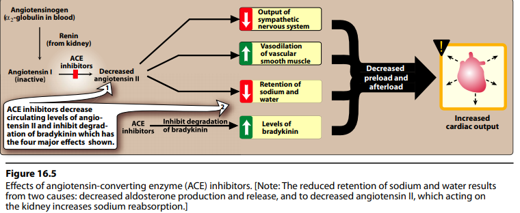
III.A.2-Indication
→ may be considered for
- single-agent therapy
- with all stages of left ventricular failure
- with lowest rejection fraction show the greatest benifit from use of ACE inhibitors
- with recent myocardial infranction also benifit form long-term therapy wiht ACE-inhibitors.
- diuretics
- β-blcokers
- digoxin
- aldosterone antagonist
III.A.3.-Pharmacokinetics
→ all ACE inhibitors adequately but incompletely absorbed following oral admin.
→ presence of foold ↓ absorption [ should be taken with empty stomach]
→ except of Catopril
- pro-drug that require activation by hydrolysis via hepatic enzymes
- with exception of Fosinopril
- plasma half-life : 2 to 12 hours
- Ramipril and Fosinopril requires only once-a-day dosing.
III.A.3-Adverse effects
→ postural hypotention , renal insufficient hyperkalemia , angioedema , dry cough
→ potential for symptomatic hypotention with ACe-inhibitors therapy requires careful monitoring
→ agents are toxic to the fetus
III.B.-ANGIOTENSIN-RECEPTORS BLOCKERS [ABRs]
→Angiotensin - receptor blockers ARBs
- nonpeptide compounds
- orally active
- extremely potent competive antagonist of the angiotensin type 1 receptor
- prototype durg
- cuz ACEinhibitors inhibit only the enzyme responsible for the
- production of angiotensin II
→ even though similar actions to those of ACE , they are not therapeutically identical
III.B.1-Action on the cardiovascular system
→ ABRS are approved for the treatment of hypertention
- by lowering blood pressure
- reducing morbidity and mortality associated with hypertension
- as substitute of ACE's inhibitors in those patients with
- severe cough / angioedema
III.B.2-Pharmacokinetics
→ all the drugs are orally active
→ require "once a day dosing"
→ Losartan
- first member of the class
- differs from the others that undergo extensive first-pass hepatic metabolism
- including convertion ot its active metabolite
→ elimination of metabolites/parent compounds happned in urine/feces
→ propotion is dependent on the individual drug
→ all are highly plasma protein bound (greater than 90%)
→ except Candesartan
- have large volumes of distribution.
III.B.3-Adverse Effects
→ adr profile similar to those of ACE
→ ABR's does not produce cough
→ also CI in pregnancy
IV. β-BLOCKERS
→ all clinicaly β-blockers are competative inhibitors
→ non-selective β-bockers act on both β1+β2 receptors
→
→ negative inotropic activity
→ but
- improve systolic functioning
- reverse cardiac remodeling
- ability to prevent the changes that occur of the chronic activation of sympathetic system
- ↓ heart rate
- inhibiting the release of renin
- prevent the direct deleterious effects of norepinephrine on the cardiac muscsle fibers
- ↓ remodeling , hypertrophy and cell death.
- angina
- cardiac arrythmias
- myocardial infranction
- congstive heart failure
- hyperthyroism
- glaucoma
- prophylaxis of migrain headaches.
→ Two β-blockers have been approved:
- Carvedilol
- non-selective β-adrenoreceptor antagonist that also blocks α-adrenoreceptors.
- long-acting Metoprolol
- β1-selective antagonist
- reduce morbidity & mortality associated with HF
- should start slow and titrate gradually based on patients tolerance.
IV.1.-CARVEDILOL
→β-blockers with concurrent α1-blocking actions that produce [is a non-selective β-adrenoreceptor antagonist]
- peripheral vasodilatoin
- ↓ blood pressure
→ ↓ lipid peroxidation & vascular wall thickening → [effects that benifit in heart failure]
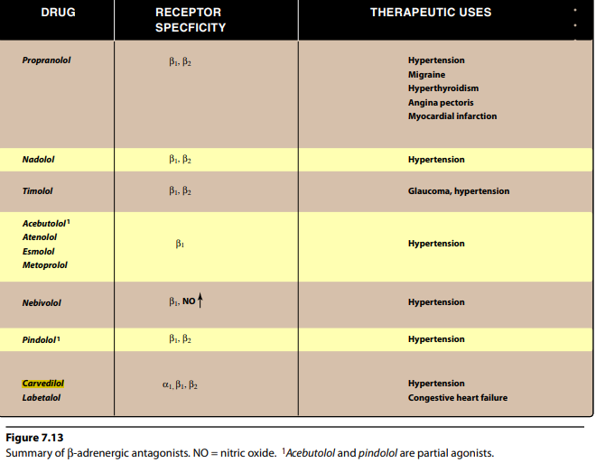
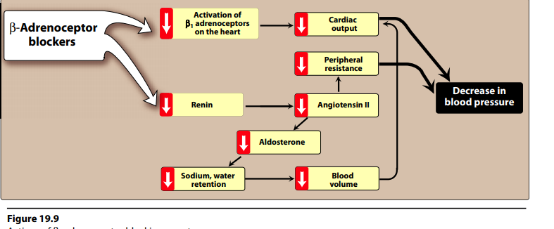
→ Acute admin. of β-blcokers can trigger:
- congestive heart failure
- worsen the condition
- carvedilol metoprolol bisoprolol
- ↓ mortality
- prevent cardiovascular mortalities.
IV.2-ATENOLOL
→ mots commonly prescribed β-blockers
→ β1-selective group
→ may be safer in patient who experience "bronchoconstrinction" in response to propanolol.
V.-DIURETICS
→ relieve pulmonary congestion & peripheral edema.
→ useful in reducing the symptoms of volume "overload"
- including — orthopnea — paroxysmal nocturnal dyspnea
- also ↓ "afterload" — [by ↓ plasma volume → ↓ blood pressure]
- mild diuretics
- creatine clearence is less than 50 mL/min.
- extensive diuresis and those with renal insufficiency
- are the most commonly used in diuretics in HF
- overdose → profound hypovolemia.
VI.-DIRECT VASODILATORS
→dilation of venous blood vessels → ↓ in cardiac "preload" by ↑ the venous capacitance.
→ reduce systemeic arteriolar resistance & ↓ afterload
→ Nitrates
- ↓ preload
- venous dilators for patients with congestive HF.
- if intolerance of ACE inhibitors or β-blcokers
- or if additional vasodilators response is required, a combination of hydralazine and isosorbide dinitrate
VII-INOTROPIC DRUGS
→ (+)-positive inotropic agents
- enhance cardiac muscle contractility → ↑ cardiac output
- ↑ cytoplasmatic Ca+2 concentration that enchance the contractility of cardiac muscle.
VII.A.-DIGITALIS GLYCOSIDES
→ cardiac glycosides
- often called "digitalis" / "digitalis glycosides"
- digitalis (foxglove) plant.
→ infulence the
- sodium and calcium ion flows in the cardiac muscle
- ↑ contraction of the artial and ventricular myocardium — [positive inotropic action]
VII.A.1-Mechanism of actions
VII.A.1.a-Regulation of cytostolic calcium concentration
→ free cytostolic calcium conc. at the end of the contraction must be ↓ for cardiac muscle to relax
→ Na+/Ca+2 exchanger
- extruding Ca+2 from the myocyte
- in exchange for Na+.
→ by inhibiting the actively pump Na+ from the cell
- cardiac glycosides ↓ Na+ conc.gradient → ↓ ability of the Na+/Ca+2 exchanger to move Ca+2 OUT of the cell.
- because of Na+/ATPase exchanges 2Na for 1K+
- restores the ion conc. and the membrane resting potential.
- resting membrane potential may ↑
- which make the membrane more excitable ↑ arrythmias [which considered to be toxicity]
- 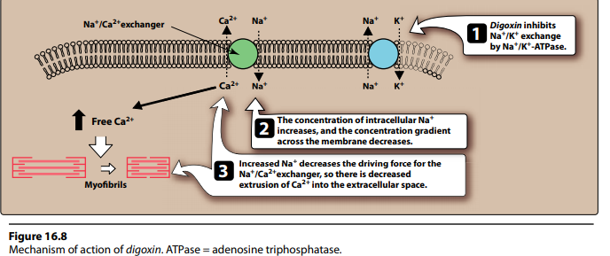
VII.A.1.b-Increased contractility of the cardiac muscle
→ ↑ the force of cardiac contraction
- causing the cardiac output to the "normal heart"
→ improved circulation → ↓ sympathetic activity
- together THESE effects cause a — reduction in heart rate —
- so heart rate ↓ & myocardial oxygen demand diminishes
- slow conduction velocity through AV nodes [ which used in artial fibrilation]
VII.A.2.-Therapeutic Use
→ severe left ventricular systolic dysfunction after initiation of ACE inhibitor and diuretic therapy
→ not indicated i patients which diastolic / right-sided HF
→ major use in HF with artial fibrilation
VII.A.3.-Pharmacokinetics
→ very potent
→ long half-life : 36 hours
→ may eliminated intact by the kidneys
- require adjustement in dose based on creatine clearence.
- because its accumulates in muscle
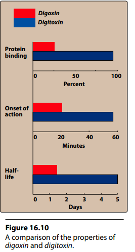
VII.A.4.-Adverse effects
→ digoxin toxicity
→ discontiniuing cardiac glycosides
→ determing serum potassium levels
- [↓ K+ increases the potential for cardiotoxicity]
→ cardiac effects
- arrythmia,
- anorexia, nausea,vomiting are commonly ecountered
- headache , fatigue , confusion , blurred vision , alteration of colour perception , halos of dark objects
VIII. ALDOSTERONE ANTAGONIST
→ advanced heart disease have elevated of aldosterone due to :
- angiotensin II stimulation
- ↓ hepatic clearence of the hormone.
- direct antagonist of aldosterone
- preventing salt retention
- myocardial hypertrophy
- hypokalemia
- promotes potassium retention
- gastric disturbances — gastritis & peptic ulcer
- central nervous system effects — lethargy — confusion
- endocrine abnormalities — gynecomastia , ↓ libido ,
- competative antagonist of aldosterone at mineralocorticoid receptor
- reduce affinity for glucocorticoid , androgen , progesterone receptors [in contrast with spirolactone]
- reduce mortality in patients with left ventricular systolic dysfunction and HF after acute myocardial infraction.
IX.-ORDER OF THERAPY
→ classified HF into 4 stages
- from least severe to most severe
→ as the disease progress — polytherapy is initiated
→ Overt heart failure
- loop diuretics are iften nitrduced first to reliefe of signs or symptoms of volume overload [dyspnea,peripheral edema]
- gradually titrate dosage
- initiated after the patients is stable on ACE inhibitiors
- gradually titrate dosage
- continue to have symptoms of HF despite the multiple drug therapy.
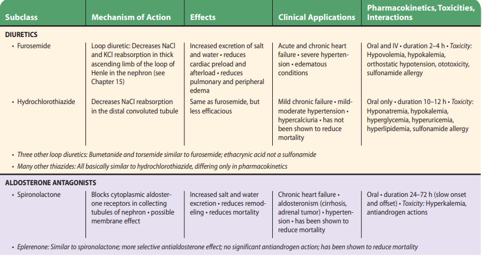
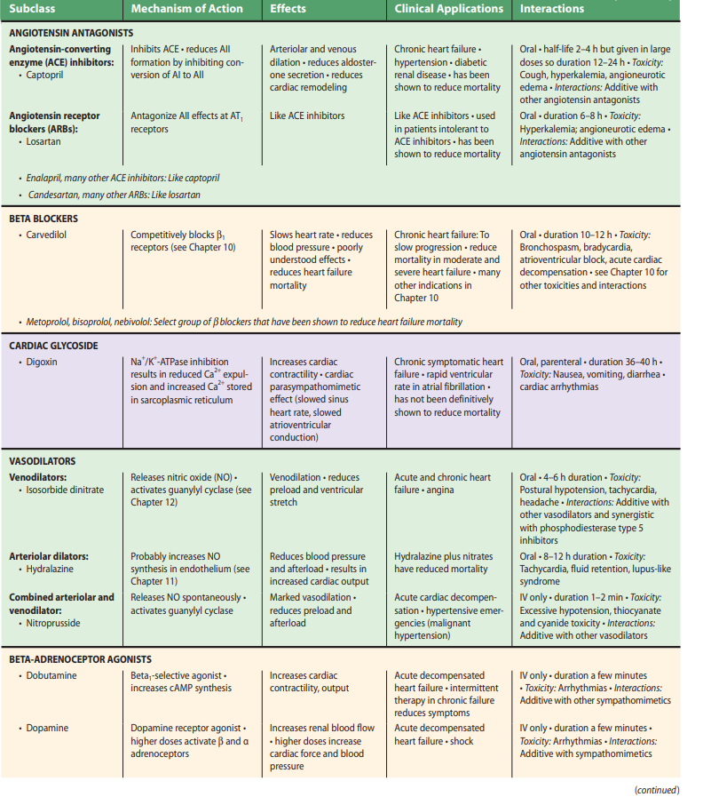
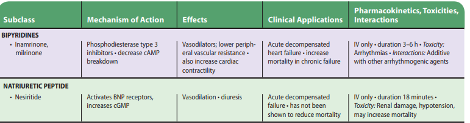
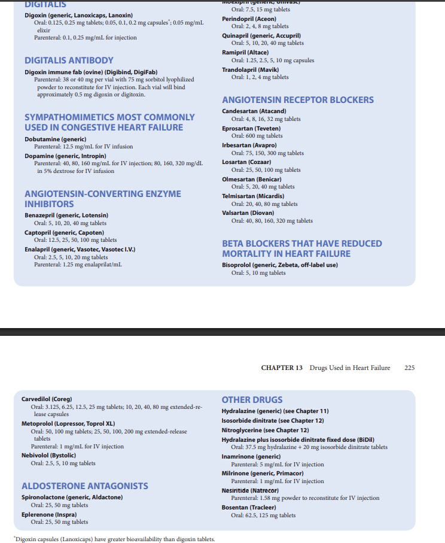
{kind=link}
{kind=link}
{kind=link}
{kind=link}
{kind=link}
{kind=link}
{kind=link}
{kind=link}
{kind=link}
{kind=link}
{kind=link}
{kind=link}
{kind=link}
{kind=link}